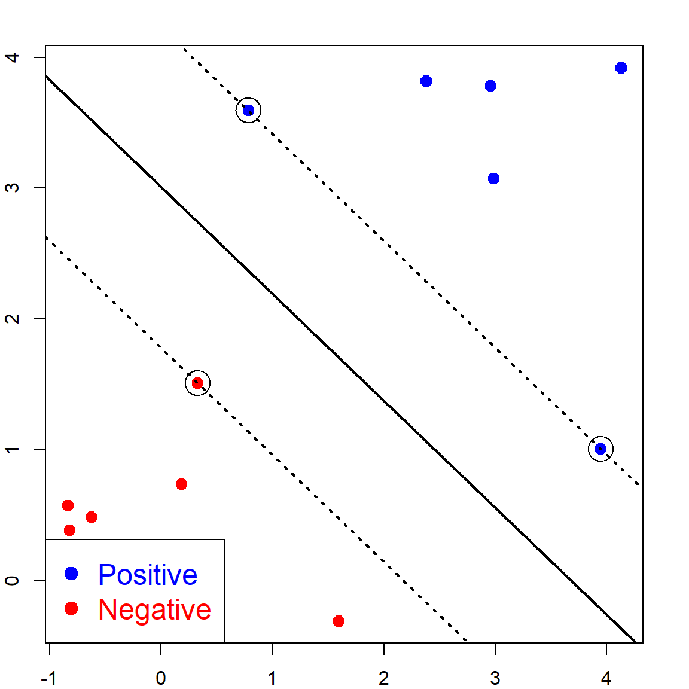
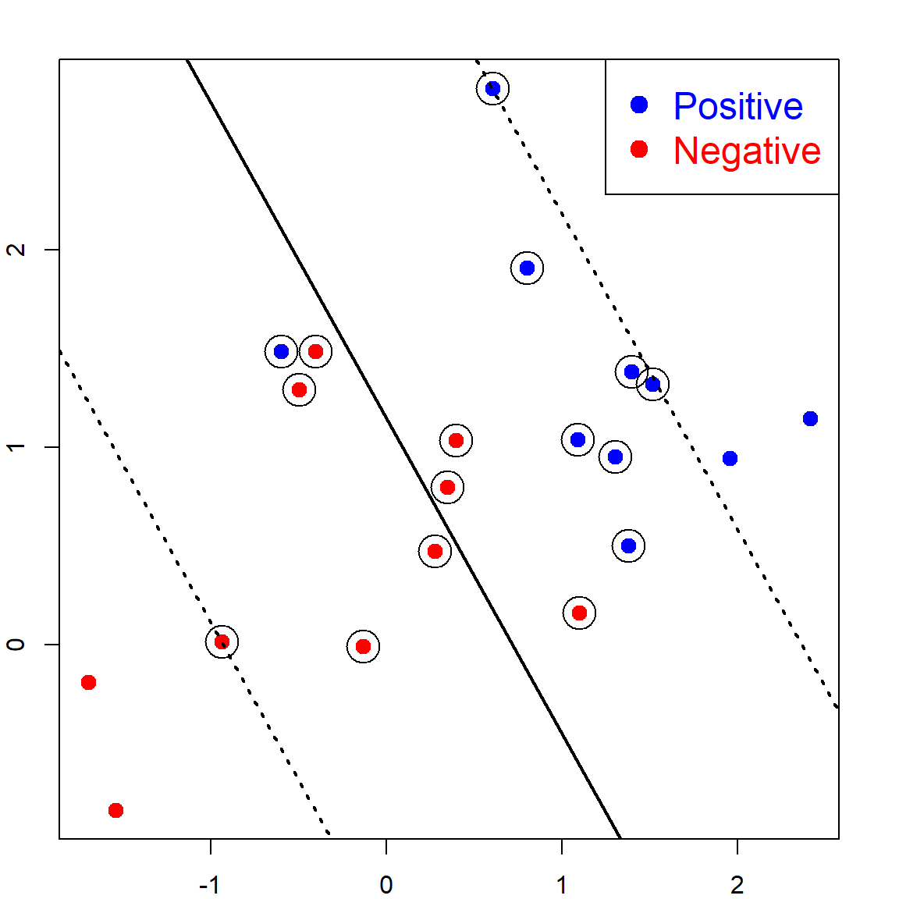
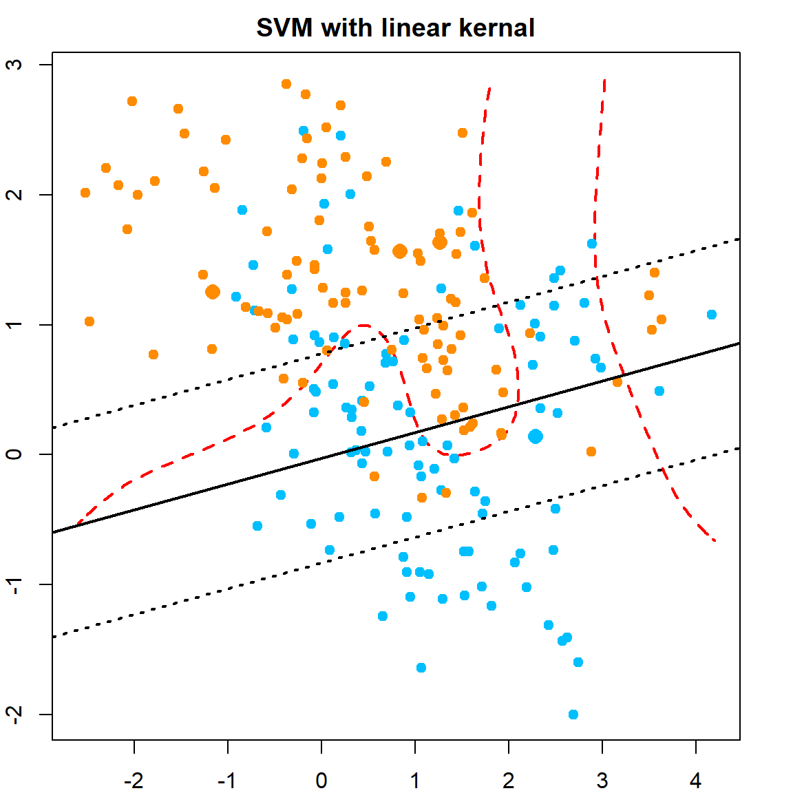
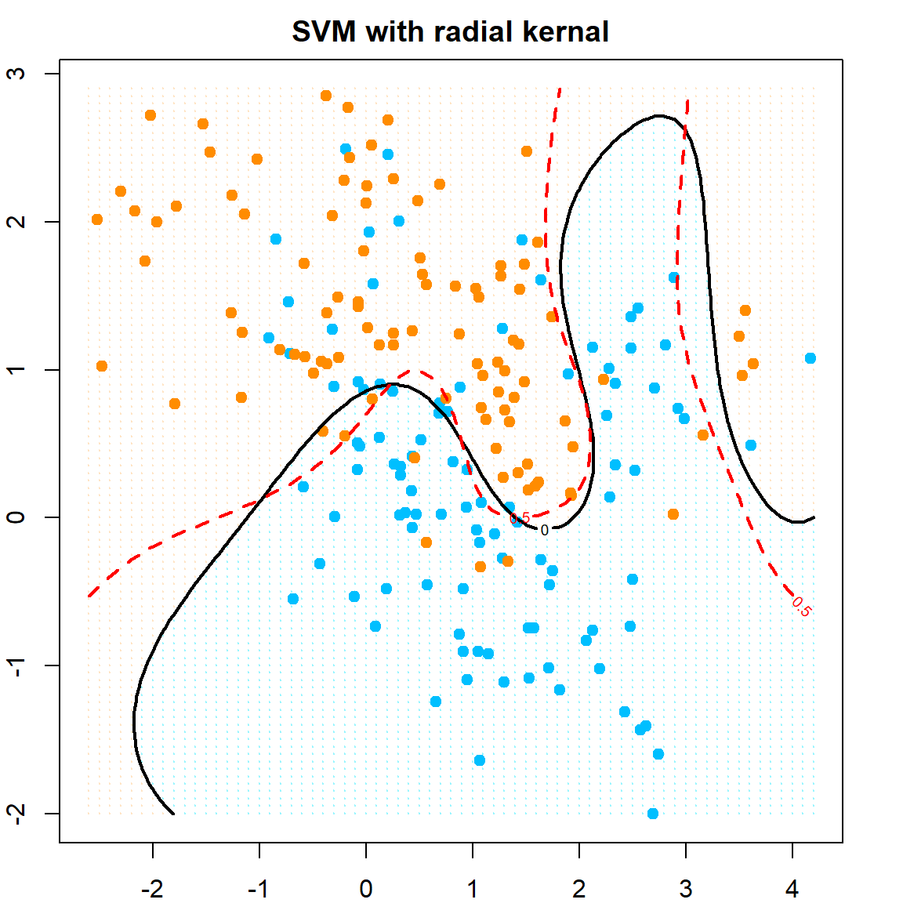
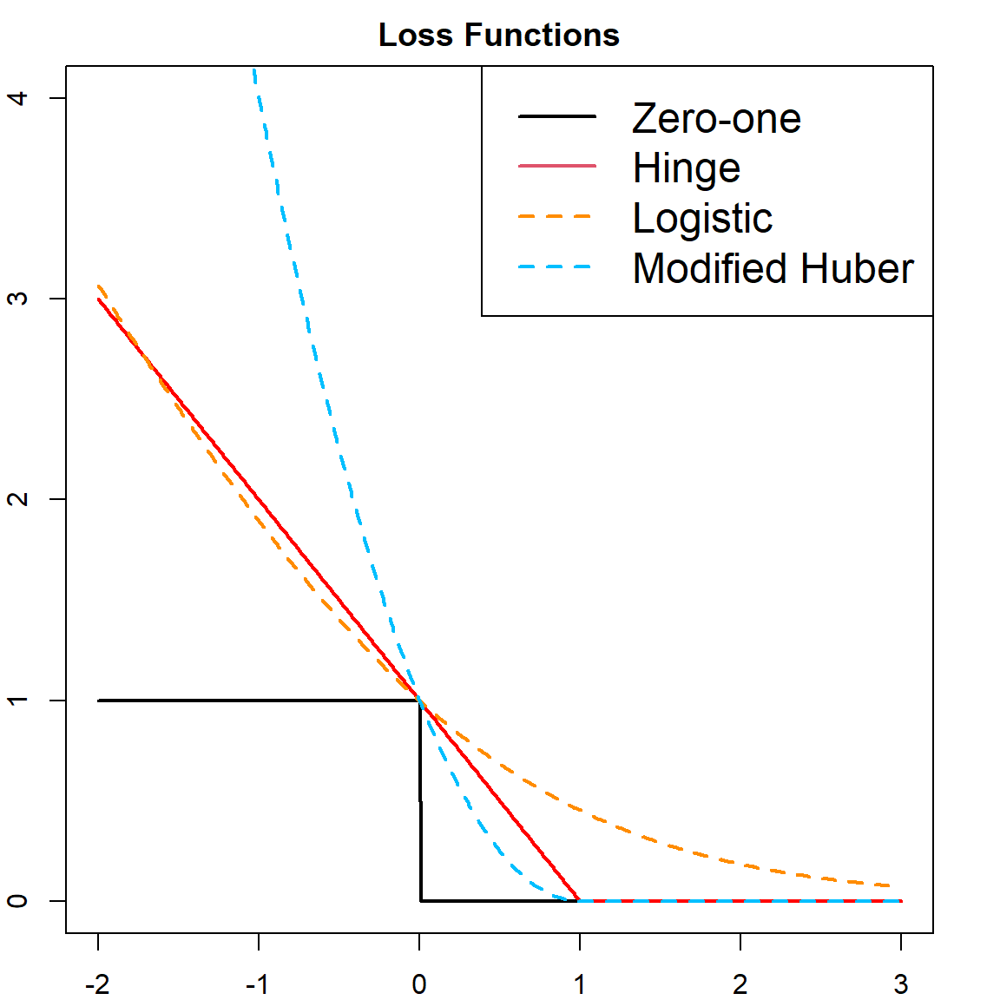

Chapter 17 Support Vector Machines
Support Vector Machine (SVM) is one of the most popular classification models. The original SVM was proposed by Vladimir Vapnik and Alexey Chervonenkis in 1963. Then two important improvements was developed in the 90’s: the soft margin version (Cortes and Vapnik 1995) and the nonlinear SVM using the kernel trick (Boser, Guyon, and Vapnik 1992). We will start with the hard margin version, and then introduce all other techniques. This chapter utilizes the kernel trick we introduced in the kernel ridge regression, however, the formulation of SVM can be independent of the results in RKHS if we only consider the linear SVM.
17.1 Maximum-margin Classifier
This is the original SVM proposed in 1963. It shares similarities with the perception algorithm, but in certain sense is a stable version. We observe the training data \({\cal D}_n = \{\mathbf{x}_i, y_i\}_{i=1}^n\), where we code \(y_i\) as a binary outcome from \(\{-1, 1\}\). The advantages of using this coding instead of \(0/1\) will be seen later. The goal is to find a linear classification rule \(f(\mathbf{x}) = \beta_0 + \mathbf{x}^\text{T}\boldsymbol{\beta}\) such that the classification rule is the sign of \(f(\mathbf{x})\):
\[ \hat{y} = \begin{cases} +1, \quad \text{if} \quad f(\mathbf{x}) > 0\\ -1, \quad \text{if} \quad f(\mathbf{x}) < 0 \end{cases} \] Hence, a correct classification would satisfy \(y_i f(\mathbf{x}_i) > 0\). Let’s look at the following example of data from two classes.
set.seed(1)
n <- 6
p <- 2
# Generate positive and negative examples
xneg <- matrix(rnorm(n*p,mean=0,sd=1),n,p)
xpos <- matrix(rnorm(n*p,mean=3,sd=1),n,p)
x <- rbind(xpos,xneg)
y <- matrix(as.factor(c(rep(1,n),rep(-1,n))))
# plot
plot(x,col=ifelse(y>0,"blue","red"), pch = 19, cex = 1.2, lwd = 2,
xlab = "X1", ylab = "X2", cex.lab = 1.5)
legend("bottomright", c("Positive", "Negative"),col=c("blue", "red"),
pch=c(19, 19), text.col=c("blue", "red"), cex = 1.5)There are many linear lines that can perfectly separate the two classes. But which is better? The SVM defines this as the line that maximizes the margin, which can be seen in the following.
We use the e1071 package to fit the SVM. There is a cost parameter \(C\), with default value 1. This parameter has a significant impact on non-separable problems. However, for this separable case, we should set this to be a very large value, meaning that the cost for having a wrong classification is very large. We also need to specify the linear kernel.
library(e1071)
svm.fit <- svm(y ~ ., data = data.frame(x, y), type='C-classification',
kernel='linear', scale=FALSE, cost = 10000)The following code can recover the fitted linear separation margin. Note here that the points on the margins are the ones with \(\alpha_i > 0\) (will be introduced later):
coefsprovides the \(y_i \alpha_i\) for the support vectorsSVare the \(x_i\) values correspond to the support vectorsrhois negative \(\beta_0\)
b <- t(svm.fit$coefs) %*% svm.fit$SV
b0 <- -svm.fit$rho
# an alternative of b0 as the lecture note
b0 <- -(max(x[y == -1, ] %*% t(b)) + min(x[y == 1, ] %*% t(b)))/2
# plot on the data
plot(x,col=ifelse(y>0,"blue","red"), pch = 19, cex = 1.2, lwd = 2,
xlab = "X1", ylab = "X2", cex.lab = 1.5)
legend("bottomleft", c("Positive","Negative"),col=c("blue","red"),
pch=c(19, 19),text.col=c("blue","red"), cex = 1.5)
abline(a= -b0/b[1,2], b=-b[1,1]/b[1,2], col="black", lty=1, lwd = 2)
# mark the support vectors
points(x[svm.fit$index, ], col="black", cex=3)
# the two margin lines
abline(a= (-b0-1)/b[1,2], b=-b[1,1]/b[1,2], col="black", lty=3, lwd = 2)
abline(a= (-b0+1)/b[1,2], b=-b[1,1]/b[1,2], col="black", lty=3, lwd = 2)
As we can see, the separation line is trying to have the maximum distance from both classes. This is why it is called the Maximum-margin Classifier.
17.2 Linearly Separable SVM
In linearly SVM, \(f(\mathbf{x}) = \beta_0 + \mathbf{x}^\text{T}\boldsymbol{\beta}\). When \(f(\mathbf{x}) = 0\), it corresponds to a hyperplane that separates the two classes:
\[\{ \mathbf{x}: \beta_0 + \mathbf{x}^\text{T} \boldsymbol \beta = 0 \}\]
Hence, for this separable case, all observations with \(y_i = 1\) are on one side \(f(\mathbf{x}) > 0\), and observations with \(y_i = -1\) are on the other side.

First, let’s calculate the distance from any point \(\mathbf{x}\) to this hyperplane. We can first find a point \(\mathbf{x}_0\) on the hyperplane, such that \(\mathbf{x}_0^\text{T}\boldsymbol{\beta}= - \beta_0\). By taking the difference between \(\mathbf{x}\) and \(\mathbf{x}_0\), and project this vector to the direction of \(\boldsymbol{\beta}\), we have that the distance from \(\mathbf{x}\) to the hyperplane is the projection of \(\mathbf{x}- \mathbf{x}_0\) onto the normed vector \(\frac{\boldsymbol{\beta}}{\lVert \boldsymbol{\beta}\lVert}\):
\[\begin{align} & \left \langle \frac{\boldsymbol{\beta}}{\lVert \boldsymbol{\beta}\lVert}, \mathbf{x}- \mathbf{x}_0 \right \rangle \\ =& \frac{1}{\lVert \boldsymbol{\beta}\lVert} (\mathbf{x}- \mathbf{x}_0)^\text{T}\boldsymbol{\beta}\\ =& \frac{1}{\lVert \boldsymbol{\beta}\lVert} (\mathbf{x}^\text{T}\boldsymbol{\beta}+ \beta_0) \\ =& \frac{1}{\lVert \boldsymbol{\beta}\lVert} f(\mathbf{x}) \\ \end{align}\]
Since the goal of SVM is to create the maximum margin, let’s denote this as \(M\). Then we want all observations to be lied on the correct side, with at least an margin \(M\). This means \(y_i (\mathbf{x}_i^\text{T}\boldsymbol{\beta}+ \beta_0) \geq M\). But the scale of \(\boldsymbol{\beta}\) is also playing a role in calculating the margin. Hence, we will use the normed version. Then, the linearly separable SVM is to solve this constrained optimization problem:
\[\begin{align} \underset{\boldsymbol{\beta}, \beta_0}{\text{max}} \quad & M \\ \text{subject to} \quad & \frac{1}{\lVert \boldsymbol{\beta}\lVert} y_i(\mathbf{x}^\text{T}\boldsymbol{\beta}+ \beta_0) \geq M, \,\, i = 1, \ldots, n. \end{align}\]
Note that the scale of \(\boldsymbol{\beta}\) can be arbitrary, let’s set it as \(\lVert \boldsymbol{\beta}\rVert = 1/M\). The maximization becomes minimization, and its equivalent to minimizing \(\frac{1}{2} \lVert \boldsymbol{\beta}\rVert^2\). Then we have the primal form of the SVM optimization problem.
\[\begin{align} \underset{\boldsymbol{\beta}, \beta_0}{\text{min}} \quad & \frac{1}{2} \lVert \boldsymbol{\beta}\rVert^2 \\ \text{subject to} \quad & y_i(\mathbf{x}_i^\text{T}\boldsymbol{\beta}+ \beta_0) \geq 1, \,\, i = 1, \ldots, n. \end{align}\]
17.2.1 From Primal to Dual
This is a general inequality constrained optimization problem.
\[\begin{align} \text{min} \quad & g(\boldsymbol{\theta}) \\ \text{subject to} \quad & h_i(\boldsymbol{\theta}) \leq 0, \,\, i = 1, \ldots, n. \end{align}\]
We can consider the corresponding Lagrangian (with all \(\alpha_i\)’s positive):
\[{\cal L}(\boldsymbol{\theta}, \boldsymbol{\alpha}) = g(\boldsymbol{\theta}) + \sum_{i = 1}^n \alpha_i h_i(\boldsymbol{\theta})\] Then there can be two ways to optimize this. If we maximize \(\alpha_i\)’s first, for any fixed \(\boldsymbol{\theta}\), then for any \(\boldsymbol{\theta}\) that violates the constraint, i.e., \(h_i(\boldsymbol{\theta}) > 0\) for some \(i\), we can always choose an extremely large \(\alpha_i\) so that \(\cal{L}(\boldsymbol{\theta}, \boldsymbol{\alpha})\) is infinity. Hence the solution of this primal form must satisfy the constraint.
\[\underset{\boldsymbol{\theta}}{\min} \underset{\boldsymbol{\alpha}\succeq 0}{\max} {\cal L}(\boldsymbol{\theta}, \boldsymbol{\alpha})\] On the other hand, if we minimize \(\boldsymbol{\theta}\) first, then maximize for \(\boldsymbol{\alpha}\), we have the dual form:
\[\underset{\boldsymbol{\alpha}\succeq 0}{\max} \underset{\boldsymbol{\theta}}{\min} {\cal L}(\boldsymbol{\theta}, \boldsymbol{\alpha})\] In general, the two are not the same:
\[\underbrace{\underset{\boldsymbol{\alpha}\succeq 0}{\max} \underset{\boldsymbol{\theta}}{\min} {\cal L}(\boldsymbol{\theta}, \boldsymbol{\alpha})}_{\text{duel}} \leq \underbrace{\underset{\boldsymbol{\theta}}{\min} \underset{\boldsymbol{\alpha}\succeq 0}{\max} {\cal L}(\boldsymbol{\theta}, \boldsymbol{\alpha})}_{\text{primal}}\] But a sufficient condition is that if both \(g\) and \(h_i\)’s are convex and also the constraints \(h_i\)’s are feasible. We will use this technique to solve the SVM problem.
First, rewrite the problem as
\[\begin{align} \text{min} \quad & \frac{1}{2} \lVert \boldsymbol{\beta}\rVert^2 \\ \text{subject to} \quad & - \{ y_i(\mathbf{x}_i^\text{T}\boldsymbol{\beta}+ \beta_0) - 1\} \leq 0, i = 1, \ldots, n. \end{align}\]
Then the Lagrangian is
\[{\cal L}(\boldsymbol{\beta}, \beta_0, \boldsymbol{\alpha}) = \frac{1}{2} \lVert \boldsymbol{\beta}\rVert^2 - \sum_{i = 1}^n \alpha_i \big\{ y_i(\mathbf{x}_i^\text{T}\boldsymbol{\beta}+ \beta_0) - 1 \big\}\] To solve this using the dual form, we first find the optimizer of \(\boldsymbol{\beta}\) and \(\beta_0\). We take derivatives with respect to them:
\[\begin{align} \boldsymbol{\beta}- \sum_{i = 1}^n \alpha_i y_i \mathbf{x}_i^\text{T}=&~ 0 \quad (\nabla_\boldsymbol{\beta}{\cal L}= 0 ) \\ \sum_{i = 1}^n \alpha_i y_i =&~ 0 \quad (\nabla_{\beta_0} {\cal L}= 0 ) \end{align}\]
Take these solution and plug them back into the Lagrangian, we have
\[{\cal L}(\boldsymbol{\beta}, \beta_0, \boldsymbol{\alpha}) = \sum_{i = 1}^n \alpha_i - \frac{1}{2} \sum_{i, j = 1}^n y_i y_j \alpha_i\alpha_j \mathbf{x}_i^\text{T}\mathbf{x}_j\] Hence, the dual optimization problem is
\[\begin{align} \underset{\boldsymbol{\alpha}}{\max} \quad & \sum_{i = 1}^n \alpha_i - \frac{1}{2} \sum_{i, j = 1}^n y_i y_j \alpha_i\alpha_j \mathbf{x}_i^\text{T}\mathbf{x}_j \nonumber \\ \text{subject to} \quad & \alpha_i \geq 0, \,\, i = 1, \ldots, n. \nonumber \\ & \sum_{i = 1}^n \alpha_i y_i = 0 \end{align}\]
Compared with the original primal form, this version has a trivial feasible solution with all \(\alpha_i\)’s being 0. One can start from this solution to search for the optimizer while maintaining within the contained region. However, the primal form is difficult since there is no apparent way to satisfy the constraint.
After solving the dual form, we have all the \(\alpha_i\) values. The ones with \(\alpha_i > 0\) are called the support vectors. Based on our previous analysis, \(\widehat{\boldsymbol{\beta}} = \sum_{i = 1}^n \alpha_i y_i x_i^T\), and we can also obtain \(\beta_0\) by calculating the midpoint of two “closest” support vectors to the separating hyperplane:
\[\widehat{\beta}_0 = - \,\, \frac{\max_{i: y_i = -1} \mathbf{x}_i^\text{T}\widehat{\boldsymbol{\beta}} + \min_{i: y_i = 1} \mathbf{x}_i^\text{T}\widehat{\boldsymbol{\beta}} }{2}\]
And the decision is \(\text{sign}(\mathbf{x}_i^\text{T}\widehat{\boldsymbol{\beta}} + \widehat{\beta}_0)\). An example has been demonstrated previously with the e1071 package.
17.3 Linearly Non-separable SVM with Slack Variables
When we cannot have a perfect separation of the two classes, the original SVM cannot find a solution. Hence, a slack was introduce to incorporate such observations:
\[y_i (\mathbf{x}_i^\text{T}\boldsymbol{\beta}+ \beta_0) \geq (1 - \xi_i)\] for a positive \(\xi\). Note that when \(\xi = 0\), the observation is lying at the correct side, with enough margin. When \(1 > \xi > 0\), the observation is lying at the correct side, but the margin is not sufficiently large. When \(\xi > 1\), the observation is lying on the wrong side of the separation hyperplane.

This new optimization problem can be formulated as
\[\begin{align} \text{min} \quad & \frac{1}{2}\lVert \boldsymbol{\beta}\rVert^2 + C \sum_{i=1}^n \xi_i \\ \text{subject to} \quad & y_i (\mathbf{x}_i^\text{T}\boldsymbol{\beta}+ \beta_0) \geq (1 - \xi_i), \,\, i = 1, \ldots, n, \\ \text{and} \quad & \xi_i \geq 0, \,\, i = 1, \ldots, n, \end{align}\]
where \(C\) is a tuning parameter that controls the emphasis on the slack variable. Large \(C\) will be less tolerable on having positive slacks. We can again write the Lagrangian primal \({\cal L}(\boldsymbol{\beta}, \beta_0, \boldsymbol{\alpha}, \boldsymbol{\xi})\) as
\[\frac{1}{2} \lVert \boldsymbol{\beta}\rVert^2 + C \sum_{i=1}^n \xi_i - \sum_{i = 1}^n \alpha_i \big\{ y_i(x_i^\text{T}\boldsymbol{\beta}+ \beta_0) - (1 - \xi_i) \big\} - \sum_{i = 1}^n \gamma_i \xi_i,\] where \(\alpha_i\)’s and \(\gamma_i\)’s are all positive. We can similarly obtain the solution corresponding to \(\boldsymbol{\beta}\), \(\beta_0\) and \(\boldsymbol{\xi}\):
\[\begin{align} \boldsymbol{\beta}- \sum_{i = 1}^n \alpha_i y_i x_i =&~ 0 \quad (\nabla_\boldsymbol{\beta}{\cal L}= 0 ) \\ \sum_{i = 1}^n \alpha_i y_i =&~ 0 \quad (\nabla_{\beta_0} {\cal L}= 0 ) \\ C - \alpha_i - \gamma_i =&~ 0 \quad (\nabla_{\xi_i} {\cal L}= 0 ) \end{align}\]
Substituting them back into the Lagrangian, we have the dual form:
\[\begin{align} \underset{\boldsymbol{\alpha}}{\max} \quad & \sum_{i = 1}^n \alpha_i - \frac{1}{2} \sum_{i, j = 1}^n y_i y_j \alpha_i\alpha_j \color{OrangeRed}{\langle \mathbf{x}_i, \mathbf{x}_j \rangle} \\ \text{subject to} \quad & 0 \leq \alpha_i \leq C, \,\, i = 1, \ldots, n, \\ \text{and} \quad & \sum_{i = 1}^n \alpha_i y_i = 0. \end{align}\]
Here, the inner product \(\langle \mathbf{x}_i, \mathbf{x}_j \rangle\) is nothing but \(\mathbf{x}_i^\text{T}\mathbf{x}_j\). The observations with \(0 < \alpha_i < C\) are the that lie on the margin. Hence, we can obtain these observations and perform the same calculations as before to obtain \(\widehat{\beta}_0\). The following code generates some data for this situation and fit SVM. We use the default \(C = 1\).
set.seed(70)
n <- 10 # number of data points for each class
p <- 2 # dimension
# Generate the positive and negative examples
xneg <- matrix(rnorm(n*p,mean=0,sd=1),n,p)
xpos <- matrix(rnorm(n*p,mean=1.5,sd=1),n,p)
x <- rbind(xpos,xneg)
y <- matrix(as.factor(c(rep(1,n),rep(-1,n))))
# Visualize the data
plot(x,col=ifelse(y>0,"blue","red"), pch = 19, cex = 1.2, lwd = 2,
xlab = "X1", ylab = "X2", cex.lab = 1.5)
legend("topright", c("Positive","Negative"),col=c("blue","red"),
pch=c(19, 19),text.col=c("blue","red"), cex = 1.5)
svm.fit <- svm(y ~ ., data = data.frame(x, y), type='C-classification',
kernel='linear',scale=FALSE, cost = 1)
b <- t(svm.fit$coefs) %*% svm.fit$SV
b0 <- -svm.fit$rho
points(x[svm.fit$index, ], col="black", cex=3)
abline(a= -b0/b[1,2], b=-b[1,1]/b[1,2], col="black", lty=1, lwd = 2)
abline(a= (-b0-1)/b[1,2], b=-b[1,1]/b[1,2], col="black", lty=3, lwd = 2)
abline(a= (-b0+1)/b[1,2], b=-b[1,1]/b[1,2], col="black", lty=3, lwd = 2)
If we instead use a smaller \(C\):
# Visualize the data
plot(x,col=ifelse(y>0,"blue","red"), pch = 19, cex = 1.2, lwd = 2,
xlab = "X1", ylab = "X2", cex.lab = 1.5)
legend("topright", c("Positive","Negative"),col=c("blue","red"),
pch=c(19, 19),text.col=c("blue","red"), cex = 1.5)
# fit SVM with C = 10
svm.fit <- svm(y ~ ., data = data.frame(x, y), type='C-classification',
kernel='linear',scale=FALSE, cost = 0.1)
b <- t(svm.fit$coefs) %*% svm.fit$SV
b0 <- -svm.fit$rho
points(x[svm.fit$index, ], col="black", cex=3)
abline(a= -b0/b[1,2], b=-b[1,1]/b[1,2], col="black", lty=1, lwd = 2)
abline(a= (-b0-1)/b[1,2], b=-b[1,1]/b[1,2], col="black", lty=3, lwd = 2)
abline(a= (-b0+1)/b[1,2], b=-b[1,1]/b[1,2], col="black", lty=3, lwd = 2)
17.4 Example: SAheart Data
If you want to use the 1071e package and perform cross-validation, you could consider using the caret package. Make sure that you specify method = "svmLinear2". The following code is using the SAheart as an example.
library(ElemStatLearn)
data(SAheart)
library(caret)
cost.grid = expand.grid(cost = seq(0.01, 2, length = 20))
train_control = trainControl(method="repeatedcv", number=10, repeats=3)
svm2 <- train(as.factor(chd) ~., data = SAheart, method = "svmLinear2",
trControl = train_control,
tuneGrid = cost.grid)
# see the fitted model
svm2
## Support Vector Machines with Linear Kernel
##
## 462 samples
## 9 predictor
## 2 classes: '0', '1'
##
## No pre-processing
## Resampling: Cross-Validated (10 fold, repeated 3 times)
## Summary of sample sizes: 416, 416, 416, 415, 416, 416, ...
## Resampling results across tuning parameters:
##
## cost Accuracy Kappa
## 0.0100000 0.7142923 0.2844994
## 0.1147368 0.7200123 0.3520308
## 0.2194737 0.7164354 0.3454492
## 0.3242105 0.7171600 0.3467866
## 0.4289474 0.7164354 0.3453015
## 0.5336842 0.7164354 0.3450704
## 0.6384211 0.7157108 0.3438517
## 0.7431579 0.7171600 0.3472755
## 0.8478947 0.7157108 0.3437850
## 0.9526316 0.7157108 0.3437850
## 1.0573684 0.7171600 0.3479914
## 1.1621053 0.7164354 0.3459484
## 1.2668421 0.7164354 0.3459484
## 1.3715789 0.7178847 0.3500130
## 1.4763158 0.7171600 0.3479914
## 1.5810526 0.7178847 0.3500130
## 1.6857895 0.7171600 0.3479914
## 1.7905263 0.7171600 0.3479914
## 1.8952632 0.7171600 0.3479914
## 2.0000000 0.7164354 0.3459484
##
## Accuracy was used to select the optimal model using the largest value.
## The final value used for the model was cost = 0.1147368.Note that when you fit the model, there are a few things you could consider:
- You can consider centering and scaling the covariates. This can be done during pre-processing. Or you may specify
preProcess = c("center", "scale")in thetrain()function. - You may want to start with a wider range of cost values, then narrow down to a smaller range, since SVM can be quite sensitive to tuning in some cases.
- There are many other SVM libraries, such as
kernlab. This can be specified by usingmethod = "svmLinear". However,kernlabusesCas the parameter name for cost. We will show an example later.
17.5 Nonlinear SVM via Kernel Trick
The essential idea of kernel trick can be summarized as using the kernel function of two observations \(\mathbf{x}\) and \(\mathbf{z}\) to replace the inner product between some feature mapping of the two covariate vectors. In other words, if we want to create some nonlinear features of \(\mathbf{x}\), such as \(x_1^2\), \(\exp(x_2)\), \(\sqrt{x_3}\), etc., we may in general write them as
\[\Phi : {\cal X}\rightarrow {\cal F}, \,\,\, \Phi(\mathbf{x}) = (\phi_1(\mathbf{x}), \phi_2(\mathbf{x}), \ldots ),\] where \({\cal F}\) has either finite or infinite dimensions. Then, we can still treat this as a linear SVM by constructing the decision rule as
\[f(x) = \langle \Phi(\mathbf{x}), \boldsymbol{\beta}\rangle = \Phi(\mathbf{x})^\text{T}\boldsymbol{\beta}.\] This is why we used the \(\langle \cdot, \cdot\rangle\) operator in the previous example. Now, the kernel trick is essentially skipping the explicit calculation of \(\Phi(\mathbf{x})\) by utilizing the property that
\[K(\mathbf{x}, \mathbf{z}) = \langle \Phi(\mathbf{x}), \Phi(\mathbf{z}) \rangle\] for some kernel function \(K(\mathbf{x}, \mathbf{z})\). Since \(\langle \Phi(\mathbf{x}), \Phi(\mathbf{z}) \rangle\) is all we need in the dual form, we can simply replace it by \(K(\mathbf{x}, \mathbf{z})\), which gives the kernel form:
\[\begin{align} \underset{\boldsymbol{\alpha}}{\max} \quad & \sum_{i = 1}^n \alpha_i - \frac{1}{2} \sum_{i, j = 1}^n y_i y_j \alpha_i\alpha_j \color{OrangeRed}{K(\mathbf{x}_i, \mathbf{x}_j)} \\ \text{subject to} \quad & 0 \leq \alpha_i \leq C, \,\, i = 1, \ldots, n, \\ \text{and} \quad & \sum_{i = 1}^n \alpha_i y_i = 0. \end{align}\]
One most apparent advantage of doing this is to save computational cost. This maybe understood using the following example:
- Consider kernel function \(K(\mathbf{x}, \mathbf{z}) = (\mathbf{x}^\text{T}\mathbf{z})^2\)
- Consider \(\Phi(\mathbf{x})\) being the basis expansion that contains all second order interactions: \(x_k x_l\) for \(1 \leq k, l \leq p\)
We can show that the two gives equivalent results, however, the kernel version is much faster. \(K(\mathbf{x}, \mathbf{z})\) takes \(p+1\) operations, while \(\langle \Phi(\mathbf{x}_i), \Phi(\mathbf{x}_j) \rangle\) requires \(3p^2\).
\[\begin{align} K(\mathbf{x}, \mathbf{z}) &=~ \left(\sum_{k=1}^p x_k z_k\right) \left(\sum_{l=1}^p x_l z_l\right) \\ &=~ \sum_{k=1}^p \sum_{l=1}^p x_k z_k x_l z_l \\ &=~ \sum_{k, l=1}^p (x_k x_l) (z_k z_l) \\ &=~ \langle \Phi(\mathbf{x}), \Phi(\mathbf{z}) \rangle \end{align}\]
Formally, this property is guaranteed by the Mercer’s theorem(Mercer 1909) that ensures: The kernel matrix \(K\) is positive semi-definite if and only if the function \(K(x_i ,x_j)\) is equivalent to some inner product \(\langle \Phi(\mathbf{x}), \Phi(\mathbf{z}) \rangle\). Although the feature maps produced by Mercer’s theorem may not be unique, it does guarantee the existence of such a feature map.
Besides making the calculation of nonlinear functions easier, using the kernel trick also implies that if we use a proper kernel function, then it defines a space of functions \({\cal H}\) (reproducing kernel Hilbert space, RKHS) that can be represented in the form of \(f(x) = \sum_i \alpha_i K(x, x_i)\) for some \(x_i\) in \({\cal X}\) (see the Moore–Aronszajn theorem) with a proper definition of inner product. However, this space is of infinite dimension, noticing that \(i\) goes from 1 to infinity. However, as long as we search for the solution within \({\cal H}\), and also apply a proper penalty of the estimated function \(\widehat{f}(\mathbf{x})\), then our computational job will reduce to solving the \(\alpha_i\)’s that corresponds to the observed \(n\) data points, meaning that we only need to solve the solution within a finite space. This is guaranteed by the Representer theorem. There are numerous articles on the RKHS. Hence, we will not focus on introducing this technique. However, we will later on use this property in the penalized formulation of SVM.
17.6 Example: mixture.example Data
We use the mixture.example data in the ElemStatLearn package. In addition, we use a different package kernlab. The red dotted line indicates the true decision boundary.
library(ElemStatLearn)
data(mixture.example)
# redefine data
px1 = mixture.example$px1
px2 = mixture.example$px2
x = mixture.example$x
y = mixture.example$y
# plot the data and true decision boundary
prob <- mixture.example$prob
prob.bayes <- matrix(prob,
length(px1),
length(px2))
contour(px1, px2, prob.bayes, levels=0.5, lty=2,
labels="", xlab="x1",ylab="x2",
main="SVM with linear kernal", col = "red", lwd = 2)
points(x, col=ifelse(y==1, "darkorange", "deepskyblue"), pch = 19)
# train linear SVM using the kernlab package
library(kernlab)
cost = 10
svm.fit <- ksvm(x, y, type="C-svc", kernel='vanilladot', C=cost)
## Setting default kernel parameters
# plot the SVM decision boundary
# Extract the indices of the support vectors on the margin:
sv.alpha<-alpha(svm.fit)[[1]][which(alpha(svm.fit)[[1]]<cost)]
sv.index<-alphaindex(svm.fit)[[1]][which(alpha(svm.fit)[[1]]<cost)]
sv.matrix<-x[sv.index,]
points(sv.matrix, pch=16, col=ifelse(y[sv.index] == 1, "darkorange", "deepskyblue"), cex=1.5)
# Plot the hyperplane and the margins:
w <- t(cbind(coef(svm.fit)[[1]])) %*% xmatrix(svm.fit)[[1]]
b <- - b(svm.fit)
abline(a= -b/w[1,2], b=-w[1,1]/w[1,2], col="black", lty=1, lwd = 2)
abline(a= (-b-1)/w[1,2], b=-w[1,1]/w[1,2], col="black", lty=3, lwd = 2)
abline(a= (-b+1)/w[1,2], b=-w[1,1]/w[1,2], col="black", lty=3, lwd = 2)
Let’s also try a nonlinear SVM, using the radial kernel.
# fit SVM with radial kernel, with cost = 5
dat = data.frame(y = factor(y), x)
fit = svm(y ~ ., data = dat, scale = FALSE, kernel = "radial", cost = 5)
# extract the prediction
xgrid = expand.grid(X1 = px1, X2 = px2)
func = predict(fit, xgrid, decision.values = TRUE)
func = attributes(func)$decision
# visualize the decision rule
ygrid = predict(fit, xgrid)
plot(xgrid, col = ifelse(ygrid == 1, "bisque", "cadetblue1"),
pch = 20, cex = 0.2, main="SVM with radial kernal")
points(x, col=ifelse(y==1, "darkorange", "deepskyblue"), pch = 19)
# our estimated function value, cut at 0
contour(px1, px2, matrix(func, 69, 99), level = 0, add = TRUE, lwd = 2)
# the true probability, cut at 0.5
contour(px1, px2, matrix(prob, 69, 99), level = 0.5, add = TRUE,
col = "red", lty=2, lwd = 2)
You may also consider some other popular kernels. The following ones are implemented in the e1071 package, with additional tuning parameters \(\text{coef}_0\) and \(\gamma\).
- Linear: \(K(\mathbf{x}, \mathbf{z}) = \mathbf{x}^\text{T}\mathbf{z}\)
- \(d\)th degree polynomial: \(K(\mathbf{x}, \mathbf{z}) = (\text{coef}_0 + \gamma \mathbf{x}^\text{T}\mathbf{z})^d\)
- Radial basis: \(K(\mathbf{x}, \mathbf{z}) = \exp(- \gamma \lVert \mathbf{x}- \mathbf{z}\lVert^2)\)
- Sigmoid: \(\tanh(\gamma \mathbf{x}^\text{T}\mathbf{z}+ \text{coef}_0)\)
Cross-validation can also be doing using the caret package. To specify the kernel, one must correctly specify the method parameter in the train() function. For this example, we use the method = "svmRadial" that uses the kernlab package to fit the model. For this choice, you need to tune just sigma and C (cost). More details are refereed to the caret documentation.
svm.radial <- train(y ~ ., data = dat, method = "svmRadial",
preProcess = c("center", "scale"),
tuneGrid = expand.grid(C = c(0.01, 0.1, 0.5, 1), sigma = c(1, 2, 3)),
trControl = trainControl(method = "cv", number = 5))
svm.radial
## Support Vector Machines with Radial Basis Function Kernel
##
## 200 samples
## 2 predictor
## 2 classes: '0', '1'
##
## Pre-processing: centered (2), scaled (2)
## Resampling: Cross-Validated (5 fold)
## Summary of sample sizes: 160, 160, 160, 160, 160
## Resampling results across tuning parameters:
##
## C sigma Accuracy Kappa
## 0.01 1 0.715 0.43
## 0.01 2 0.760 0.52
## 0.01 3 0.770 0.54
## 0.10 1 0.720 0.44
## 0.10 2 0.790 0.58
## 0.10 3 0.800 0.60
## 0.50 1 0.795 0.59
## 0.50 2 0.815 0.63
## 0.50 3 0.830 0.66
## 1.00 1 0.795 0.59
## 1.00 2 0.825 0.65
## 1.00 3 0.835 0.67
##
## Accuracy was used to select the optimal model using the largest value.
## The final values used for the model were sigma = 3 and C = 1.17.7 SVM as a Penalized Model
Recall that in SVM, we need \(y_i f(\mathbf{x}_i)\) to be at least \(1 - \xi_i\), this implies that we would prefer \(1 - y_i f(\mathbf{x}_i)\) to be negative or 0. And observation with \(1 - y_i f(\mathbf{x}_i)\) should be penalized. Hence, recall that the objective function of dual form in SVM is \(\frac{1}{2}\lVert \boldsymbol{\beta}\rVert^2 + C \sum_{i=1}^n \xi_i\), we may rewrite this as a new version:
\[\min \,\, \sum_{i=1}^n \big[ 1 - y_i f(\mathbf{x}_i) \big]_{+} \, +\, \lambda \lVert \boldsymbol{\beta}\rVert^2.\] Here, we converted \(1/(2C)\) to \(\lambda\). And this resembles a familiar form of “Loss \(+\) Penalty”, where the slack variables becomes the loss and the norm of \(\boldsymbol{\beta}\) is the penalty. This particular loss function is called the Hinge loss, with
\[L(y, f(\mathbf{x})) = [1 - yf(\mathbf{x})]_+ = \max(0, 1 - yf(\mathbf{x}))\] However, the Hinge loss is not differentiable. There are some other loss functions that can be used as substitute:
- Logistic loss: \[L(y, f(\mathbf{x})) = \log_2( 1 + e^{-y f(\mathbf{x})})\]
- Modified Huber Loss: \[L(y, f(\mathbf{x})) = \begin{cases} \max(0, 1 - yf(\mathbf{x}))^2 & \text{for} \quad yf(\mathbf{x}) \geq -1 \\ -4 yf(\mathbf{x}) & \text{otherwise} \\ \end{cases}\]
Here is a visualization of several different loss functions.
t = seq(-2, 3, 0.01)
# different loss functions
hinge = pmax(0, 1 - t)
zeroone = (t <= 0)
logistic = log2(1 + exp(-t))
modifiedhuber = ifelse(t >= -1, (pmax(0, 1 - t))^2, -4*t)
# plot
plot(t, zeroone, type = "l", lwd = 2, ylim = c(0, 4),
main = "Loss Functions")
points(t, hinge, type = "l", lwd = 2, col = "red", )
points(t, logistic, type = "l", lty = 2, col = "darkorange", lwd = 2)
points(t, modifiedhuber, type = "l", lty = 2, col = "deepskyblue", lwd = 2)
legend("topright", c("Zero-one", "Hinge", "Logistic", "Modified Huber"),
col = c(1, 2, "darkorange", "deepskyblue"), lty = c(1, 1, 2, 2),
lwd = 2, cex = 1.5)
For linear decision rules, with \(f(\mathbf{x}) = \beta_0 + \mathbf{x}^\text{T}\boldsymbol{\beta}\), this should be trivial to solve. However, we also want to consider nonlinear decision functions. But the above form does not contain a kernel function to use the kernel trick. The Representer Theorem (Kimeldorf and Wahba 1970) can help us in this case. This theorem was originally developed for in the setting of Chebyshev splines, but later on generalized. The theorem ensures that if we solve the function \(f\) with regularization with respect to the norm in the RKHS induced from a kernel function \(K\), then the solution must admits a finite representation of the form (although the space \({\cal H}\) we search for the solution is infinite):
\[\widehat{f}(\mathbf{x}) = \sum_{i = 1}^n \beta_i K(\mathbf{x}, \mathbf{x}_i).\] This suggests that the optimization problem becomes
\[\sum_{i=1}^n L(y_i, \mathbf{K}_i^\text{T}\boldsymbol{\beta}) + \lambda \boldsymbol{\beta}^\text{T}\mathbf{K}\boldsymbol{\beta},\] where \(\mathbf{K}_{n \times n}\) is the kernel matrix with \(\mathbf{K}_{ij} = K(x_i, x_j)\), and \(\mathbf{K}_i\) is the \(i\) the column of \(\mathbf{K}\). This is an unconstrained optimization problem that can be solved using gradient decent if \(L\) is differentiable. More details will be presented in the next Chapter.
17.8 Kernel and Feature Maps: Another Example
We give another example about the equivalence of kernel and the inner product of feature maps. Consider the Gaussian kernel \(e^{-\gamma \lVert \mathbf{x}- \mathbf{z}\rVert}\). We can write, using Tayler expansion,
\[\begin{align} &e^{\gamma \lVert \mathbf{x}- \mathbf{z}\rVert} \nonumber \\ =& e^{-\gamma \lVert \mathbf{x}\rVert + 2 \gamma \mathbf{x}^\text{T}\mathbf{z}- \gamma \lVert \mathbf{z}\rVert} \nonumber \\ =& e^{-\gamma \lVert \mathbf{x}\rVert - \gamma \lVert \mathbf{z}\rVert} \bigg[ 1 + \frac{2 \gamma \mathbf{x}^\text{T}\mathbf{z}}{1!} + \frac{(2 \gamma \mathbf{x}^\text{T}\mathbf{z})^2}{2!} + \frac{(2 \gamma \mathbf{x}^\text{T}\mathbf{z})^3}{3!} + \cdots \bigg] \end{align}\]
Note that \(\mathbf{x}^\text{T}\mathbf{z}\) is the inner product of all first order feature maps. We also showed previously \((\mathbf{x}^\text{T}\mathbf{z})^2\) is equivalent to the inner product of all second order feature maps (\(\Phi_2(\mathbf{x})\)), and \((\mathbf{x}^\text{T}\mathbf{z})^3\) would be equivalent to the third order version (\(\Phi_3(\mathbf{x})\)), etc.. Hence, the previous equation can be written as the inner product of feature maps in the form of
\[e^{-\gamma \lVert \mathbf{x}\rVert} \bigg[ 1, \sqrt{\frac{2\gamma}{1!}} \mathbf{x}^\text{T}, \sqrt{\frac{(2\gamma)^2}{2!}} \Phi_2^\text{T}(\mathbf{x}), \sqrt{\frac{(2\gamma)^3}{3!}} \Phi_3^\text{T}(\mathbf{x}), \cdots \bigg]\]
This shows the Gaussian kernel is corresponding to all polynomials with a scaling factor of \(e^{-\gamma \lVert \mathbf{x}\rVert}\)